CS184/284A Fall 2026 Homework 3 Write-Up
Link to webpage: https://cal-cs184-student.github.io/hw3-trace-writeup/ Link to GitHub repository: https://github.com/cal-cs184-student/hw3-trace-writeup

Overview
In this homework, I implemented the core components of a physically based path tracer. I generated camera rays from image-space samples, tested rays against triangles and spheres, and used a bounding volume hierarchy to make scene intersection more efficient. I then implemented direct and global illumination, including light sampling, recursive light transport, and Russian roulette termination. Finally, I added adaptive sampling so that pixels stop receiving samples once their estimated illumination has converged.
This project helped me understand how the separate stages of a rendering pipeline work together. In particular, I learned how camera geometry determines the rays entering a scene, how intersection routines identify visible surfaces, and how Monte Carlo sampling estimates the light reaching each pixel. I also found it interesting that acceleration structures and sampling strategies can greatly improve performance and image quality without changing the underlying scene.
Part 1: Ray Generation and Scene Intersection
Ray Generation and Pixel Sampling
The rendering pipeline begins by generating camera rays through samples on
the image plane. In Camera::generate_ray, I mapped normalized
image coordinates \((x,y)\in[0,1]^2\) onto the virtual sensor at
\(z=-1\). The horizontal and vertical sensor bounds are determined by
\(\tan(\mathrm{hFov}/2)\) and \(\tan(\mathrm{vFov}/2)\), respectively.
Because the field-of-view values are stored in degrees, I first converted
them to radians.
The camera-space point on the sensor was computed as
\[ \left( (2x-1)\tan\left(\frac{\mathrm{hFov}}{2}\right), (2y-1)\tan\left(\frac{\mathrm{vFov}}{2}\right), -1 \right). \]
This point also gives the camera-space ray direction because the camera is
at the origin in camera space. I transformed the direction into world space
using the camera-to-world rotation matrix c2w, normalized it,
and used the world-space camera position pos as the ray origin.
I initialized the ray's valid interval using the near and far clipping
planes.
In PathTracer::raytrace_pixel, I generated
ns_aa samples for each pixel. For each sample, I drew a random
two-dimensional offset from the uniform grid sampler and added it to the
pixel's bottom-left coordinate. I divided the resulting coordinates by the
image width and height before passing them to
generate_ray. I traced every ray, accumulated its returned
radiance, and stored the average in the sample buffer.
Primitive Intersection
Each generated camera ray is tested against the scene primitives. A ray is
represented parametrically as \(P(t)=o+td\), where \(o\) is its origin,
\(d\) is its direction, and \(t\) gives the distance along the ray. I
accepted an intersection only when its \(t\) value was between the ray's
min_t and max_t. Whenever a closer valid
intersection was found, I updated max_t, allowing later tests
to reject farther intersections.
For spheres, I substituted the ray equation into the implicit sphere equation \[ \|o+td-c\|^2=r^2 \] and solved the resulting quadratic equation. If the discriminant was negative, the ray missed the sphere. Otherwise, I tested the smaller root first and used the larger root only when the smaller one was outside the valid ray interval. The surface normal was the normalized vector from the sphere center to the intersection point.
Triangle Intersection Algorithm
I implemented ray-triangle intersection using the Möller–Trumbore algorithm. For triangle vertices \(p_1,p_2,p_3\), I formed the two edge vectors \(e_1=p_2-p_1\) and \(e_2=p_3-p_1\). The algorithm uses cross and dot products to solve directly for the ray parameter \(t\) and the barycentric coordinates \(u\) and \(v\), without explicitly constructing the plane equation.
I first calculated the determinant \[ \det = e_1 \cdot (d \times e_2). \] If its magnitude was nearly zero, the ray was parallel to the triangle and there was no intersection. Otherwise, I computed \(u\), \(v\), and \(t\). The point lies inside the triangle only when \[ u \geq 0,\qquad v \geq 0,\qquad u+v \leq 1. \] I then checked that \(t\) was inside the ray's valid interval and updated the ray's maximum distance.
For a valid hit, the three barycentric weights are \(1-u-v\), \(u\), and \(v\). I used them to interpolate the triangle's three vertex normals: \[ n=(1-u-v)n_1+un_2+vn_3. \] I normalized this result and stored it along with the hit distance, primitive pointer, and material pointer in the intersection structure.
Normal-Shading Results

CBempty.dae rendered with normal shading.
The differently oriented walls produce distinct colors.
|
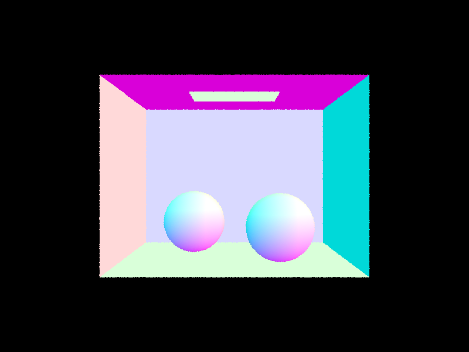 CBspheres_lambertian.dae rendered with normal
shading. The smooth color changes across the spheres demonstrate
their analytically computed surface normals.
|

banana.dae rendered with normal shading. The curved banana
surface demonstrates successful triangle intersection and barycentric
interpolation of vertex normals on a more detailed mesh.
These results confirm that camera rays are generated in the correct directions, the closest valid primitive intersection is selected, and surface normals are computed or interpolated correctly for both triangles and spheres.
Part 2: Bounding Volume Hierarchy
BVH Construction
I constructed the bounding volume hierarchy recursively. For each node, I first computed an axis-aligned bounding box containing all primitives in its range. If the number of primitives was no greater than the configured maximum leaf size, I stored the primitive iterator range in that node and returned it as a leaf.
For an interior node, I computed another bounding box containing the
centroids of its primitives. I selected the axis with the largest centroid
spread because this axis offered the greatest spatial separation. I then
used std::nth_element to divide the primitives at their median
centroid along that axis. A median split guarantees that both child ranges
are nonempty, avoiding infinite recursion when multiple primitives have
similar centroid positions. I recursively constructed the left and right
children from the two resulting ranges.
Ray Traversal
I implemented ray-box intersection using the slab method. The ray's valid
interval was intersected with its entry and exit interval for the x, y, and
z slabs. If the interval became empty, the ray missed the box. During BVH
traversal, a missed bounding box allowed the entire subtree to be skipped.
For an intersected leaf, I tested only the primitives stored in that leaf.
The boolean intersection function stopped after its first hit, while the
closest-intersection function visited all relevant children and relied on
each primitive intersection to reduce ray.max_t.
Normal-Shaded BVH Results
|
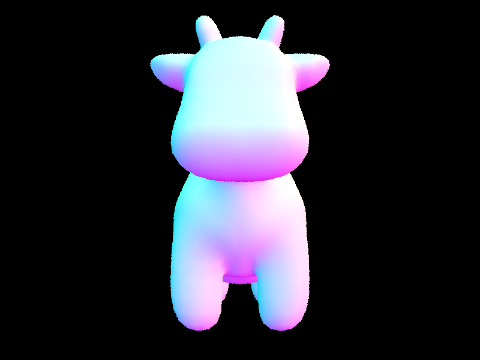 |
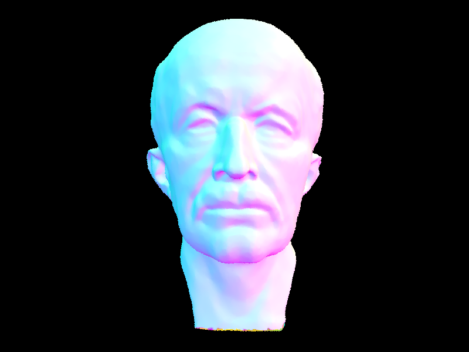 |
|
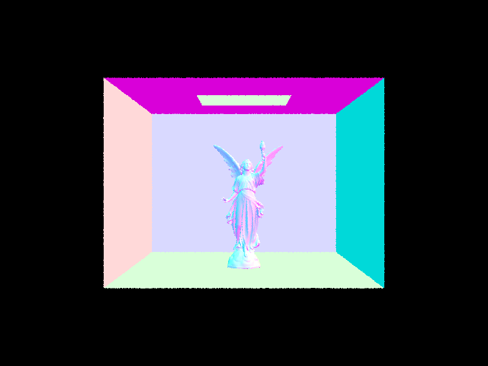 |
|
Performance Comparison
| Scene | Threads | BVH | Render Time | Primitive Tests per Ray |
|---|---|---|---|---|
| Cow | 8 | No | 17.1101 s | 1328.176659 |
| Cow | 8 | Yes | 0.0552 s | 2.567964 |
| Banana | 1 | No | 4.6454 s | 2458.000000 |
| Banana | 1 | Yes | 0.0788 s | 2.239954 |
The BVH produced a dramatic performance improvement. For the cow, the render time decreased from 17.1101 seconds to 0.0552 seconds, approximately a 310x speedup, while primitive tests decreased by approximately 517x. For the banana, using one thread in both measurements, rendering decreased from 4.6454 seconds to 0.0788 seconds, approximately a 59x speedup, while primitive tests decreased by approximately 1097x. The time speedup is not exactly equal to the reduction in primitive tests because BVH construction, bounding-box tests, tree traversal, and other rendering work introduce additional costs. Nevertheless, the hierarchy makes highly detailed scenes such as Max Planck and Lucy practical to render.
Part 3: Direct Illumination
Diffuse BSDF and Zero-Bounce Lighting
I modeled diffuse surfaces using a Lambertian BSDF. The reflected value is constant with respect to the incoming and outgoing directions and is given by the surface reflectance divided by \(\pi\):
\[ f_r(\omega_i,\omega_o)=\frac{\rho}{\pi}. \]
Zero-bounce illumination represents light that travels directly from an emissive surface to the camera without reflecting from another surface. I implemented it by returning the emission value stored in the BSDF of the intersected primitive.
Uniform Hemisphere Sampling
For uniform hemisphere sampling, I created a local coordinate system at each intersection whose positive z-axis was aligned with the surface normal. I generated random incoming directions uniformly over this local hemisphere and transformed each direction into world space before tracing a new ray. If the ray intersected an emissive surface, I added its contribution using the emitted radiance, diffuse BSDF, cosine term, and uniform hemisphere probability density \(1/(2\pi)\). I divided the sum by the number of samples to obtain the Monte Carlo estimate.
This method is unbiased, but it is inefficient when the light occupies only a small part of the hemisphere. Most sampled directions miss the light and contribute zero, creating substantial noise.
Light Importance Sampling
For light importance sampling, I iterated through the lights and called
sample_L to directly sample a direction from the intersection
toward each light. I transformed that direction into the local surface
frame and discarded samples behind the surface. I then cast a shadow ray
with its maximum distance set just before the sampled light. If no geometry
blocked the ray, I accumulated the incoming radiance multiplied by the
BSDF, cosine term, and inverse PDF. Area-light contributions were averaged
over the requested number of samples, while delta lights required only one
sample.
I used EPS_F as the minimum ray distance and subtracted it from
the shadow ray's maximum distance. This prevents numerical error from
causing a ray to intersect either the surface from which it originated or
the light itself.
Light-Sampling Rate Comparison
The following assets use the Cornell Box bunny scene, one sample per pixel, and light importance sampling. Only the number of light rays changes.
|
|
|
|
|
|
With one light ray, the penumbra and directly illuminated surfaces contain strong random variation. At four rays, the shadow structure becomes easier to recognize, although visible grain remains. Sixteen rays produce a much more stable estimate, and sixty-four rays give the smoothest soft-shadow transition. Increasing the sample count reduces variance because each pixel averages more independently sampled points on the area light.
Hemisphere Sampling versus Light Sampling
|
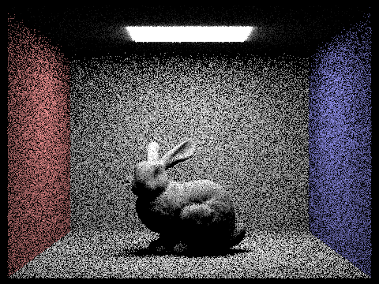 |
|
At the same sampling rate, uniform hemisphere sampling is considerably noisier than light importance sampling. Hemisphere sampling wastes most of its rays on directions that do not intersect the relatively small area light, so many samples contribute no radiance. Light sampling instead concentrates its samples on directions known to reach the light and uses a shadow ray only to determine visibility. It therefore has much lower variance and produces smoother illumination and soft shadows with the same number of samples. It also supports point lights, which a randomly sampled continuous direction would have essentially zero probability of hitting.
Part 4: Global Illumination
Implementation
I implemented indirect lighting recursively in
at_least_one_bounce_radiance. At each surface intersection,
I first evaluate direct lighting. If the ray still has remaining depth, I
sample a new incoming direction from the surface BSDF, transform it from
object space to world space, and trace a new ray from the intersection point.
The returned radiance is weighted by the BSDF, cosine term, sampling PDF,
and Russian roulette continuation probability:
\[ L_{\text{indirect}} = L_i f_r(\omega_o,\omega_i) \frac{\cos\theta}{p(\omega_i)p_{\text{continue}}}. \]
The first indirect bounce is always evaluated. For later bounces, I use Russian roulette with a continuation probability of 0.65. Dividing surviving paths by this probability keeps the estimator unbiased while allowing most long paths to terminate early.
Global illumination result
Direct versus indirect illumination
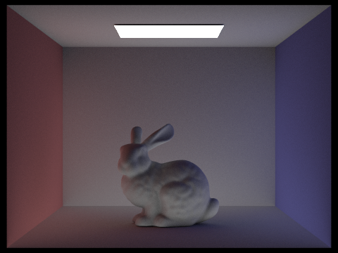
Direct illumination contains light traveling directly from the area light to a visible surface. It creates the strongest highlights and shadows. The indirect-only image contains light that first reflects from another surface. It is dimmer, but it illuminates regions that cannot see the light directly and produces color bleeding between surfaces.
Individual bounce contributions

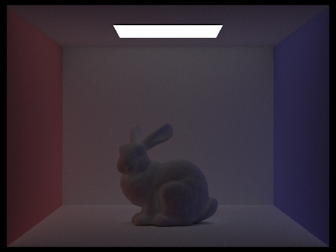
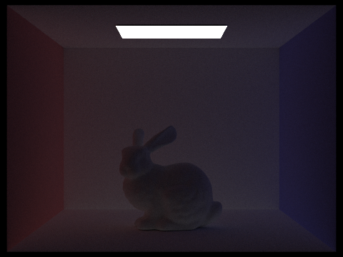
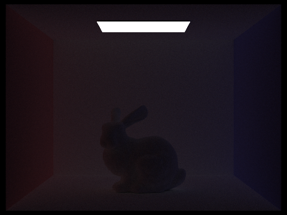
The second bounce is the most noticeable indirect contribution because it allows light reflected from the walls and floor to illuminate the bunny and fill dark regions. The third bounce adds weaker illumination and additional color bleeding. Contributions from depths four and five are progressively smaller because light loses energy after each diffuse reflection.
Accumulated versus unaccumulated bounces
| Unaccumulated | Accumulated |
|---|---|
|
|
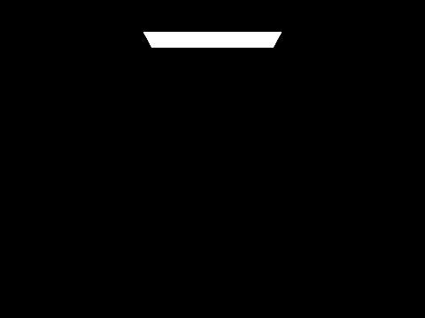 |
|
|
|
|
|
|
|
|
|
|
|
|
|
|
|
An unaccumulated image isolates the contribution from one exact path length, so higher-depth results become darker and noisier. An accumulated image adds all contributions up to the selected depth. It therefore becomes brighter and more complete as the maximum depth increases. The difference becomes small at depths four and five because the later bounces contribute relatively little energy.
Russian roulette
Without probabilistic termination, a maximum depth of 100 would require many unnecessary recursive ray traces. Russian roulette terminates most paths early while occasionally allowing long paths to continue. The depth-100 image remains similar to the lower-depth converged images because very deep bounces contribute little energy.
Samples per pixel
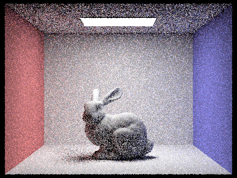
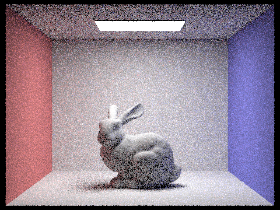
At one or two samples per pixel, the result contains strong Monte Carlo noise. Increasing the sample count progressively reduces the variance, making the bunny, shadows, and indirect illumination smoother. The 1024-sample result is substantially cleaner, although its rendering cost is much higher. Noise decreases approximately with the square root of the number of samples, so obtaining twice the visual quality requires considerably more samples.
Part 5: Adaptive Sampling
Implementation
Adaptive sampling reduces rendering time by allowing each pixel to use a different number of samples. Pixels whose radiance estimates converge quickly stop early, while pixels with high variance continue sampling up to the maximum sample count.
In PathTracer::raytrace_pixel, I maintained the running sums
\(s_1 = \sum x_k\) and \(s_2 = \sum x_k^2\), where \(x_k\) is the
illuminance of a radiance sample. After every batch of samples, I computed:
\[ \mu = \frac{s_1}{n}, \qquad \sigma^2 = \frac{1}{n-1} \left(s_2-\frac{s_1^2}{n}\right). \]
I then calculated the 95% confidence interval
\(I = 1.96\sigma/\sqrt{n}\). Sampling for a pixel stops when
\(I \leq \text{maxTolerance}\cdot\mu\). Otherwise, the renderer continues
until the next batch or until it reaches the maximum number of samples.
I stored the actual number of samples in sampleCountBuffer so
that the renderer could generate the sampling-rate visualization.
Both scenes below were rendered with a maximum of 2048 samples per pixel, a batch size of 64, a tolerance of 0.05, one sample per area light, and a maximum ray depth of 5. In each rate image, blue regions required fewer samples, while red regions required more samples.
CBbunny
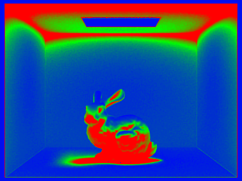
The bunny's silhouette, shadows, and regions affected by indirect lighting have higher variance and therefore require more samples. Smooth wall regions converge more quickly and stop after fewer batches.
CBspheres
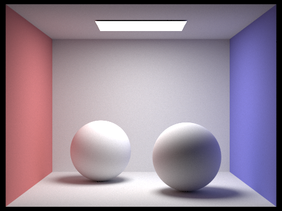
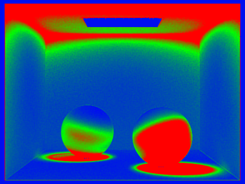
The sampling-rate images demonstrate that a uniform sample count would waste work on pixels that converge quickly. Adaptive sampling concentrates the computation on noisy areas while still producing clean final images.